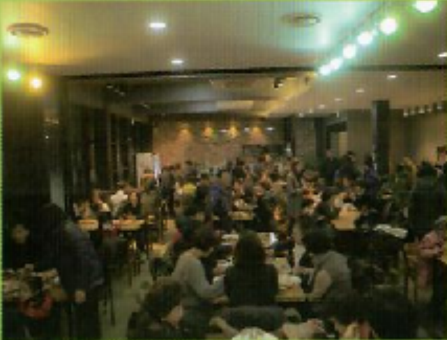
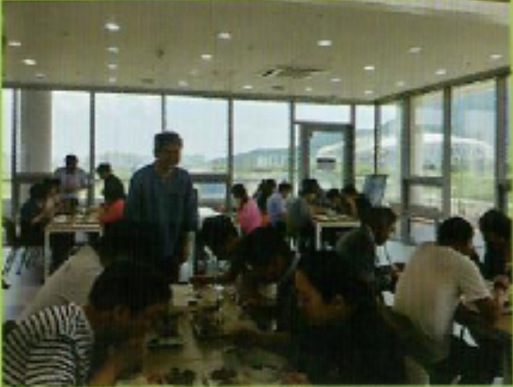
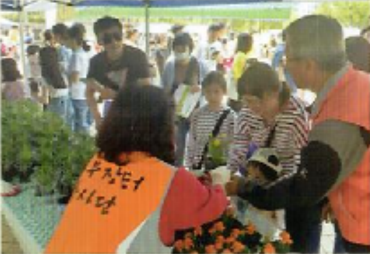
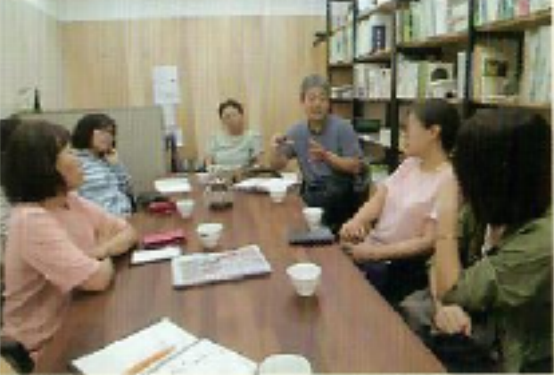

농부장터 소개
직매장 운영
식당 운영
네트워크 사업
교육 사업
조합원 정보
농부장터 역사
찾아오시는 길
생산자와 소비자가
직접만나는 곳
생산자와 소비자 간 마음의 거리는 줄이고
관계를 쌓아가는 이곳은 농부장터 입니다.
■ 로컬푸드 식당 운영
 
그린테라스
지역의 신선한 재료로 조리한
한식 뷔페 운영(11:30~14:00)
수제차와 커피를 즐길 수 있는
카페 공간
다양한 교양 강좌와 동아리
활동이 있는 문화공간 제공
두레비앙
지역 농산물 공공기관 공기업
급식 이용
도시민 대상 안전한 먹거리
제공과 생산지 판로 확대
■ 협동 사업
 
지역의 신선한 재료로 조리한
한식 뷔페 운영(11:30~14:00)
수제차와 커피를 즐길 수 있는
카페 공간
다양한 교양 강좌와 동아리
활동이 있는 문화공간 제공
지역 농산물 공공기관 공기업
급식 이용
도시민 대상 안전한 먹거리
제공과 생산지 판로 확대